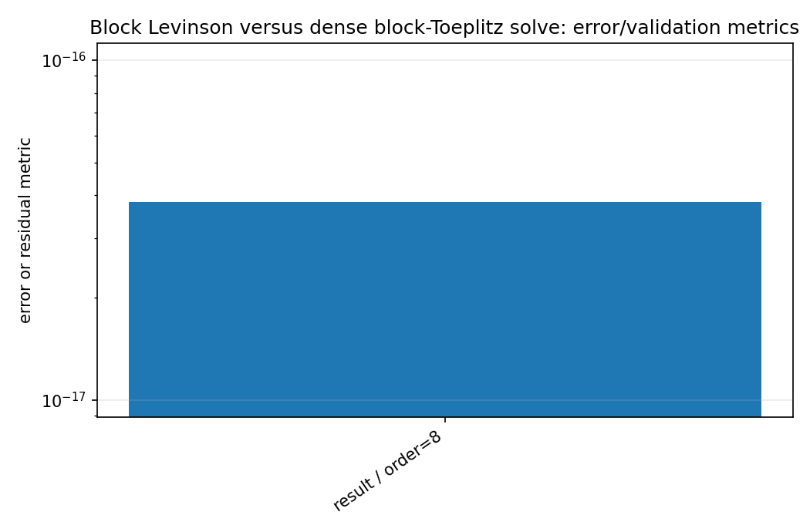
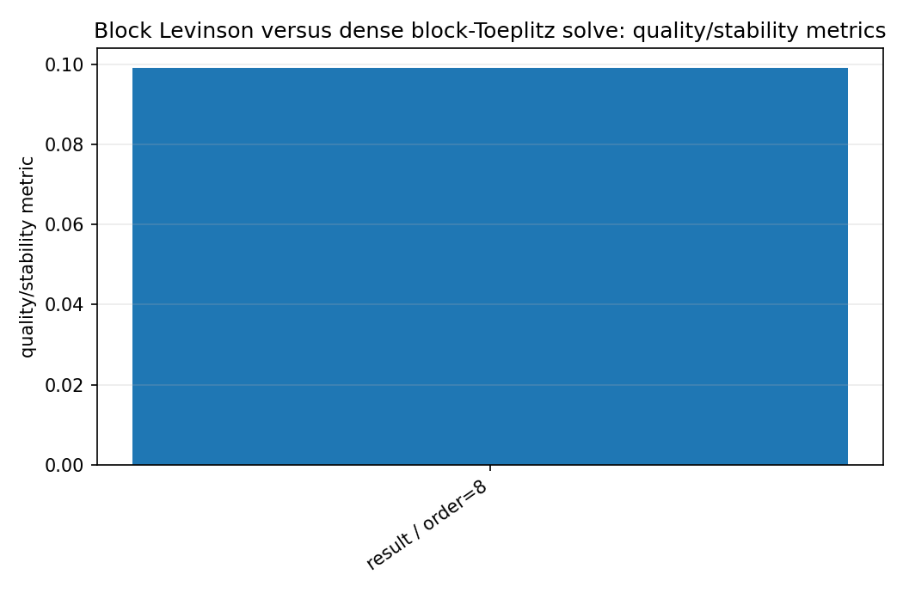
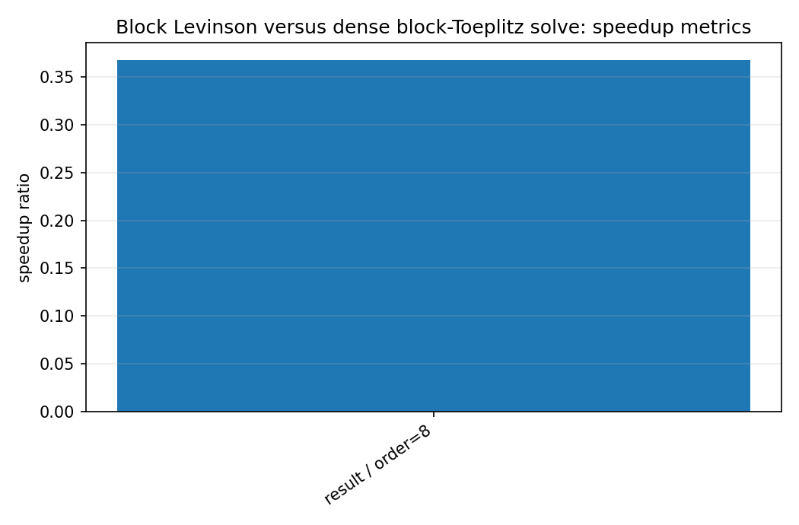
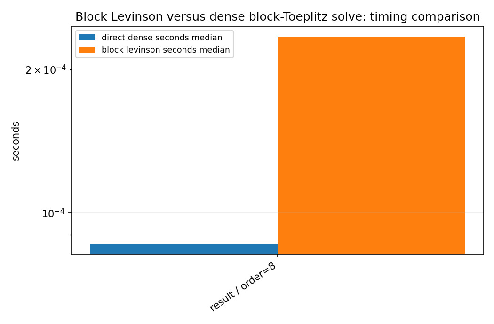

Block Levinson versus dense block-Toeplitz solve¶
Tutorial goal
Compare structured vector AR estimation against a dense direct solve.
Note
New to the terminology? See the lattice DSP concept map and the causality/data-use guide for how online, offline, block, and MIMO examples should be read.
Context¶
This benchmark validates the multichannel AR implementation by comparing block Levinson-Durbin coefficients with a dense block-Toeplitz solve. It is currently more of a numerical validation benchmark than a speedup claim.
Key idea and equations¶
The key numerical diagnostic is the coefficient difference norm between the two solutions.
How to read the result¶
Small coefficient differences validate the recursion. Reflection spectral norms below one indicate a stable matrix-reflection sequence.
Run command¶
python benchmarks/block_levinson_benchmark.py --channels 4 --order 8 --samples 20000 --repeats 3 --output docs/benchmarks/generated/_artifacts/block_levinson/block-levinson.json
Run status¶
Return code: 0
Visual and data readout¶
When the benchmark gallery is built with results, this page embeds PNG summaries generated from the same JSON/CSV artifacts. The raw data stay available below as downloads so exact numbers remain reproducible without making the public page read like console output.
Figures¶
{kind=link}

block_levinson_error_summary.png¶
{kind=link}

block_levinson_quality_summary.png¶
{kind=link}

block_levinson_speedup_summary.png¶
{kind=link}

block_levinson_timing_comparison.png¶
Generated data files¶
Source code¶
1"""Benchmark dense block Yule-Walker solve versus block Levinson recursion."""
2
3from __future__ import annotations
4
5import argparse
6import json
7import time
8from pathlib import Path
9
10import numpy as np
11
12import lattice_dsp as ld
13
14
15def simulate_var(channels: int, order: int, samples: int, seed: int) -> np.ndarray:
16 rng = np.random.default_rng(seed)
17 coeffs = []
18 for lag in range(order):
19 raw = rng.standard_normal((channels, channels))
20 # Small, diagonally dominant coefficients keep the VAR stable.
21 coeffs.append((0.18 / (lag + 1)) * raw / max(channels, 1))
22 radius = ld.companion_spectral_radius(np.asarray(coeffs))
23 if radius >= 0.85:
24 scale = 0.85 / radius
25 coeffs = [scale * a for a in coeffs]
26
27 x = np.zeros((samples + 512, channels))
28 noise = rng.normal(size=x.shape)
29 for n in range(order, x.shape[0]):
30 y = noise[n].copy()
31 for lag, a_lag in enumerate(coeffs, start=1):
32 y -= a_lag @ x[n - lag]
33 x[n] = y
34 return x[512:]
35
36
37def median_time(fn, repeats: int) -> float:
38 times = []
39 for _ in range(repeats):
40 t0 = time.perf_counter()
41 fn()
42 times.append(time.perf_counter() - t0)
43 return float(np.median(times))
44
45
46def main() -> None:
47 parser = argparse.ArgumentParser()
48 parser.add_argument("--channels", type=int, default=4)
49 parser.add_argument("--order", type=int, default=12)
50 parser.add_argument("--samples", type=int, default=50000)
51 parser.add_argument("--repeats", type=int, default=5)
52 parser.add_argument("--output", type=Path, default=None)
53 args = parser.parse_args()
54
55 x = simulate_var(args.channels, args.order, args.samples, seed=123)
56 r = ld.multichannel_autocorrelation(x, order=args.order)
57
58 direct = ld.solve_block_yule_walker_direct(r, order=args.order)
59 levinson = ld.block_levinson_durbin(r, order=args.order)
60 coeff_diff = float(np.linalg.norm(direct.coefficients - levinson.coefficients))
61
62 direct_time = median_time(lambda: ld.solve_block_yule_walker_direct(r, order=args.order), args.repeats)
63 levinson_time = median_time(lambda: ld.block_levinson_durbin(r, order=args.order), args.repeats)
64
65 result = {
66 "channels": args.channels,
67 "order": args.order,
68 "samples": args.samples,
69 "repeats": args.repeats,
70 "direct_dense_seconds_median": direct_time,
71 "block_levinson_seconds_median": levinson_time,
72 "speedup_direct_over_levinson": direct_time / levinson_time if levinson_time else float("inf"),
73 "coefficient_difference_norm": coeff_diff,
74 "max_reflection_spectral_norm": float(np.max(levinson.reflection_spectral_norms)),
75 }
76
77 print(json.dumps(result, indent=2))
78 if args.output is not None:
79 args.output.parent.mkdir(parents=True, exist_ok=True)
80 args.output.write_text(json.dumps(result, indent=2) + "\n")
81
82
83if __name__ == "__main__":
84 main()